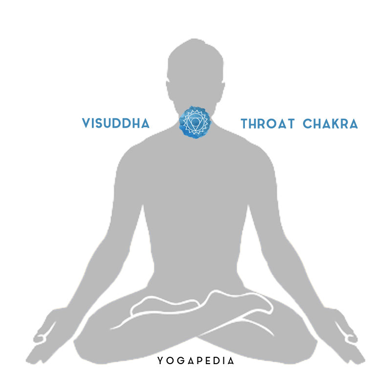
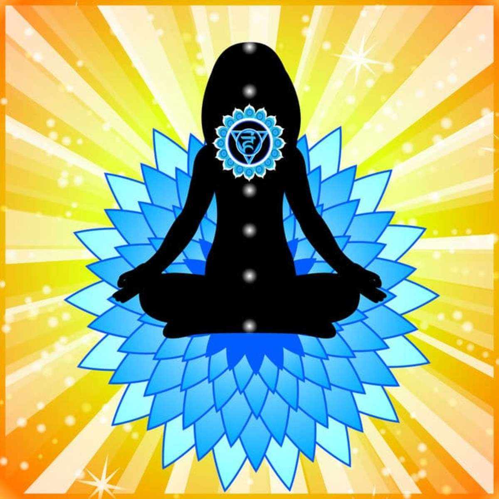
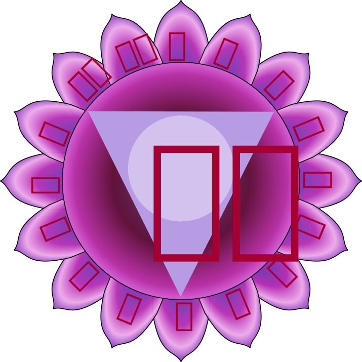

Vishuddhi Chakra - Throat Chakra
Vishuddhi Chakra - Throat Centre
Visha = impurity, poison suddhi = purify
The Vishuddhi Chakra is situated in the throat. Its Mantra is HAM. The colour of Vishuddhi is purple. In
this Chakra our consciousness reaches the fifth level. The corresponding element is Akasha (space). “We
may also find this translated as “Ether”, which suggests this space should be filled with energy. The
Vishuddhi Chakra is the starting point of Udana Prana. It is a function of this Prana to purify the body
of toxic substances while breathing. The name of the Chakra is derived from this particular function.
Purification not only occurs on the physical level, but also on the level of the psyche and mind. All
problems and unpleasant experiences that we have “swallowed” and suppressed during the course of our
life, continue to exist in the subconscious mind until they are faced and resolved with wisdom.
The Divinity of the Vishuddhi Chakra is Brahma, the Creator, the symbol of Consciousness. In meditation
when individual consciousness is dissolved in Akasha, we attain Knowledge and Wisdom. The animal
designated to represent Vishuddhi Chakra, is a White Elephant. We also find in this picture an image of
the moon, symbolic of the mind.
The Vishuddhi Chakra unleashes an unlimited feeling of happiness and freedom that allows our abilities
and skills to blossom. Along with this stage of development there is a clear voice, a talent for singing
and speech, as well as balanced and calm thoughts.
Until this Chakra is fully developed, certain difficulties may be experienced. Blockage of the Vishuddhi
Chakra produces feelings of anxiety, lack of freedom, restriction, thyroid and throat problems. There
may be physically unfounded manifestations of swallowing problems and speech impediments.
In the symbolic picture of Vishuddhi Chakra is a Lotus with sixteen petals. These represent the sixteen
potential abilities (Klas) that a human can develop. Since the Vishuddhi Chakra is the centre of sound,
the number sixteen can also represent the sixteen vowels of the Sanskrit alphabet. Vak Siddhi may be
realised in this centre, which is the extraordinary ability to have the words that one speaks come
true.

The Characteristics of Vishuddha Chakra
The expressive element of blue
The blue color element of the fifth of the seven chakras explores all levels of self-expression.
Blue is the color of communication, providing us with the power of speaking the truth. Blue is also
at the cooler end of the spectrum of colors. Blue allows the body and mind to experience stillness.
It represents a pure mind that is uncluttered from any negative thought.
Expand your mind with the element of Akasha
The element of Vishuddha Chakra is Akasha or space. Space opens the possibility of an expansion of
perspective. It symbolizes the energy of seeking and speaking the truth. Vishuddha also governs our
internal communication with our true Self. When this chakra is balanced, we are able to listen to
the guidance of pure energy. We are able to understand others deeply and effectively.

Signs of a Blocked Throat Chakra
When the energy of the Vishuddha Chakra is imbalanced, communication breaks down. We refuse to listen
to our inner Self and to others. Others are unable to understand us and feelings of loneliness
surround us. The symptoms of a disturbed Throat Chakra are:
- Hesitation in expressing emotions
- Lacking the vocabulary to describe your feelings
- A sense feeling misunderstood by people around you
- Aggressive behavior
- Use of negative words and actions
Since the Vishuddha Chakra is connected to the throat, there are visible physical problems due to
imbalance. A sore throat, fluctuations in hormone levels, and pain or stiffness in the neck area can
be symptoms of a misaligned Throat Chakra.
Positive affirmations for Throat chakra balance
The repetition of affirmations sets the intention to break old patterns and create new, healthier and
more effective, ones. To balance the Throat Chakra, repeat affirmations that relate to authenticity
and open communication. Here are some examples:
- I communicate confidently and with ease.
- I feel comfortable speaking my mind.
- I am balanced in speaking and listening.
- I am an active listener.
- I speak my true thoughts with clarity.
- I set clear boundaries.
| Chakra Symbol |
 |
| Chakra Name |
Throat Chakra |
| Chakra Sanskrit Name |
Vishuddi |
| Chakra Location |
Throat |
| Chakra Color |
Blue |
| Chakra Seed Sound |
HAM |
| Chakra Element |
Sound |
| Chakra Affirmation |
I Speak |
| Chakra Gland |
Thyroid |